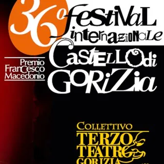

da sab 10 ott a sab 13 feb · dalle 20:30
36° Festival Teatrale Internazionale CASTELLO DI GORIZIA - Premio Francesco Macedonio
La 36ª edizione del Festival Internazionale Castello di Gorizia – Premio Francesco Macedonio, porterà in scena la grande prosa, i musical travolgenti, la commedia e la grande musica sui palchi del Kulturni dom, Kulturni Center Lojze Bratuž e Teatro Verdi, dal 10 ottobre 2026 al…
 Indicazioni
Indicazioni
- Costi e prenotazioni
- Costo non indicato · Prenotazione non indicata
- Programma
- Programma da verificare. Apri la fonte ufficiale per orari e possibili aggiornamenti.
- In caso di maltempo
- Nessuna indicazione specifica pubblicata.
- Note
- Acquisito automaticamente dalla fonte.
L’EVENTO
Descrizione completa
La 36ª edizione del Festival Internazionale Castello di Gorizia – Premio Francesco Macedonio, porterà in scena la grande prosa, i musical travolgenti, la commedia e la grande musica sui palchi del Kulturni dom, Kulturni Center Lojze Bratuž e Teatro Verdi, dal 10 ottobre 2026 al 13 febbraio 2027.
Programma:
sabato 10 ottobre - Kulturni dom
“Due donne e un delitto” di Valentina Capecci
Compagnia teatrale “Linea di confine” di Roma
sabato 17 ottobre - Kulturni Center Lojze Bratuž
“Le nuove Maldobrie” di Giorgio Amodeo
Compagnia teatrale “Gianfranco Saletta” di Trieste
venerdì 23 ottobre - Teatro Verdi
"Michael Jackson Tribute Show"
Con i Jackson One
venerdì 30 ottobre - Kulturni dom
“Elephant Man” di Joseph Merrick e Frederick Treves
Compagnia teatrale “Giardini dell’arte” di Firenze
sabato 7 novembre - Kulturni dom
“Tre papà e un bebè” di Antonio Grosso
Compagnia teatrale “Quanta brava gente” di Grottaglie (TA)
sabato 14 novembre - Teatro Verdi
“Kinky Boots il Musical” di Harvey Fierstein – testi e musica di Cyndi Lauper
Con la “Compagnia dell’anello” di Forlì
martedì 1° dicembre - Teatro Verdi
“Ariella fa 90” diretto da Paolo Quazzolo
Con Ariella Reggio e altri artisti
venerdì 4 dicembre - Kulturni Center Lojze Bratuž
“Amori, tradimenti e passioni nell’opera lirica e nell’operetta”
Con il soprano Claudia Mavilia e il baritono Kevin Baliviera
Al pianoforte il M° Alberto Olivo
sabato 12 dicembre - Teatro Verdi
“The Christmas Sky/Freevoices Show Choir”
Diretto da Manuela Marussi
venerdì 18 dicembre - Kulturni dom
“Volare con Domenico Modugno”
Con Eugenio Leggiadri Gallani
Band diretta da Manuel Figheli con la cantante Sassia Pettovel
sabato 16 gennaio 2027 - Kulturni dom
“Il Campiello” di Carlo Goldoni
Compagnia teatrale “Soggetti smarriti” di Treviso
venerdì 22 gennaio 2027 - Kulturni Center Lojze Bratuž
“Novecento” di Alessandro Baricco
Compagnia “Filodrammatica Orenese” di Vimercate (MI)
sabato 30 gennaio 2027 - Kulturni dom
“Le allegre Historie del Decamerone” di Mauro Fontanini (da Giovanni Boccaccio)
“Collettivo Terzo Teatro” di Gorizia
venerdì 5 febbraio 2027 - Kulturni Center Lojze Bratuž
“Fradeo Sol Comare Luna (Ballata per Francesco)” di Fulvio Ervas e Roberto Cuppone
Compagnia teatrale “Il Satiro Teatro” di Treviso
sabato 13 febbraio 2027 - Kulturni dom
Premiazioni
“35 anni senza battere ciglio”
Con il duo comico “I PAPU” (Andrea Appi e Ramiro Besa)
Biglietti:
Teatro Verdi - € 18,00; over 65 € 16,00; under 25 € 12,00
Kulturni Dom e Kulturni Center Lojze Bratuž - € 15,00; over 65 € 13,00; under 25 € 10,00
Abbonamenti (11 spettacoli): € 121,00; over 65 € 110,00; under 25 € 99,00
Prevendita presso la Libreria Voltapagina – Corso Verdi 54, Gorizia (Gio-Ven-Sab: 9.30-12.30 e 15.30-19.00)
Oppure online sul circuito Vivaticket
IL PROGRAMMA
Programma e orari
Appuntamenti raccolti dalle fonti elencate. Dove manca un orario, non è ancora disponibile in questa scheda.
Programma pubblicato
- Dal 2026-10-10 al 2027-02-13
INFORMAZIONI UTILI
Prima di partire
- Controllare la fonte prima di partire.
ORGANIZZAZIONE